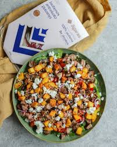
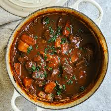
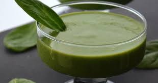
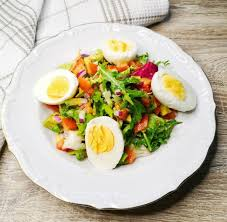
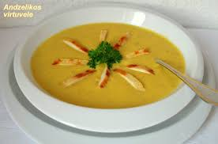
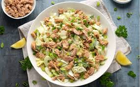
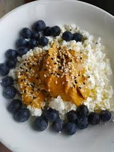
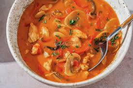
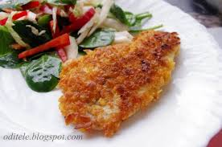

Jautienos salotos

Baltyminga vakarienė su šviežiais ingredientais.
Paruošimas:
- Kepkite jautienos juosteles su druska ir pipirais.
- Sumaišykite su šviežiomis salotomis ir padažu.
Jautienos troškinys

Sultingas, aromatingas ir šildantis patiekalas.
Paruošimas:
- Troškinkite jautienos gabalėlius su morkomis ir svogūnais.
- Įpilkite sultinio ir virkite apie 1,5 val.
- Patiekite su bulvėmis arba ryžiais.
Kefyras su špinatais

Lengvas, žalias ir gaivus pasirinkimas vakarui.
Paruošimas:
- Plakiklyje sumaišykite kefyrą, špinatus ir žiupsnelį druskos.
- Patiekite atšaldytą.
Virti kiaušiniai su salotomis

Greitas, paprastas ir baltymingas patiekalas.
Paruošimas:
- Užvirkite ir išvirkite kiaušinius (apie 9 min).
- Patiekite su žaliomis salotomis ir alyvuogių aliejumi.
Omletas su vištiena ir salotomis
Baltymų turtingas ir sotus pasirinkimas vakarui.
Paruošimas:
- Išplakite kiaušinius, kepkite keptuvėje.
- Įdėkite keptos vištienos juostelių ir sūrio.
- Patiekite su salotomis.
Trinta sriuba su vištiena ir daržovėmis

Šilta, švelni ir maistinga vakarienė puodelyje.
Paruošimas:
- Virti morkas, bulves, vištieną sultinyje.
- Viską sutrinti iki vientisos masės.
- Pagardinti grietinėle ar prieskoniais.
Tuno salotos

Greitai paruošiamos, šviežios ir baltymingos.
Paruošimas:
- Sumaišykite salotas, tuną, pomidorus, alyvuoges.
- Pagardinkite alyvuogių aliejumi.
Varškė su riešutų sviestu ir miško uogomis

Lengva, salstelėjusi ir baltymų turtinga vakarienė.
Paruošimas:
- Sumaišykite varškę su 1 š. riešutų sviesto.
- Užberkite miško uogų (šaldytų ar šviežių).
Vištienos troškinys su daržovėmis

Minkštas, aromatingas, tikra vakarienės šiluma.
Paruošimas:
- Troškinkite vištieną su morkomis, paprikomis, svogūnais.
- Užpilkite vandens ar sultinio, virkite 30–40 min.
Baltos žuvies kepsnys su salotomis

Švelnaus skonio žuvis + traškios salotos = idealu.
Paruošimas:
- Kepti žuvį su sviestu ir citrina keptuvėje ar orkaitėje.
- Patiekti su šviežių daržovių salotomis.